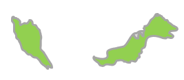

← 国一覧へ戻る
← 国一覧へ戻る
Jalur Gemilang（ジャルル・グミラン）― マレー語で「栄光の縞」
東南アジアの中心に位置するマレーシアは、マレー系・中国系・インド系が共存する多民族・多文化国家。熱帯雨林の大自然、世界遺産の古都、近代的な都市が一度に楽しめるのが最大の魅力です。
年間約40万人の日本人が訪れる人気旅行先。ビザ不要・英語が通じやすい・物価が安いの三拍子が揃い、初めての海外旅行先としても定番。日本食レストランも豊富で食事の心配も少ない。
年間を通して25〜32℃の常夏。地域によって雨季・乾季が異なります。


マレーシアは年間を通して27〜29℃の常夏。地域によって雨季・乾季の時期が異なります。
色が濃いオレンジほど気温が高く、黄金色は比較的涼しい月です。
✅ ベスト：3〜9月（乾季）／ 雨季でもスコール程度で観光可能
✅ ベスト：11〜4月（西海岸の乾季） ／ 9〜10月は北東モンスーンの影響で雨多め
✅ ベスト：1〜5月（乾季・ダイビング最適） ／ 9〜11月は雨季で海が荒れやすい
💡 航空券が安い時期
6〜7月はLCCの航空券が安くなりやすい時期。1月中旬〜3月も比較的ねらい目。年末年始・GW・お盆は高騰するので要注意。
💡 節約ポイント
・両替は市内の両替専門店が最もレートが良い。到着直後の分だけ空港で両替し残りは市内で
・チップ不要（特別なサービス時のみ任意）
・屋台・フードコートで本格グルメが格安
・Grabアプリはタクシーより安く安心
💳 Wiseカードが便利
現金を大量に持ち歩かなくても、Wiseカードがあれば現地のATMでリンギットをその場で引き出せます。両替手数料も低く、為替レートも実勢レートに近いため、両替所を探す手間も省けて安心です。
Wiseの詳細を見る →💡 MDAC（デジタル入国カード）
マレーシア入国の3日前からオンライン登録が必要。子供も登録が必要。
URL: imigresen-online.imi.gov.my/mdac/main（2026年5月時点）
現地SIMは安いが、空港や市内のショップで入手する手間と時間がかかる。ポケットWi-Fiは複数人で使えるが持ち運びの手間あり。日本出発前に準備しておくと到着後すぐ使えて便利。
| 日本語 | マレー語 / 読み方 | |
|---|---|---|
| 👋 あいさつ | ||
| こんにちは | Selamat siangスラマッ シアン | |
| 元気ですか？ | Apa khabar?アパ カバル？ | |
| 元気です。あなたは？ | Khabar baik. Awak?カバル バイク。アワッ？ | |
| バイバイ | Selamat tinggalスラマッ ティンガル | |
| 綺麗ですね！人や物を褒めるときに | Cantik sekali!チャンティッ スカリ！ | |
| 🙏 基本表現 | ||
| ありがとう | Terima kasihトゥリマ カシ | |
| ごめんなさい | Minta maafミンタ マーフ | |
| 大丈夫 | Tidak apa-apaティダッ アパアパ | |
| はい / いいえ | Ya / Tidakヤー / ティダッ | |
| 名前は〜です | Nama saya ～ナマ サヤ ～ | |
| 名前は何ですか？ | Siapa nama awak?シアパ ナマ アワッ？ | |
| 🍽️ レストラン・ショッピング | ||
| おいしい！ | Sedap!スダッ！ | |
| あまり好きじゃない | Saya tak suka sangatサヤ タッ スカ サンガッ | |
| おすすめは？ | Apa yang disyorkan?アパ ヤン ディショルカン？ | |
| 辛い | Pedasプダス | |
| 辛くない | Tidak pedasティダッ プダス | |
| 辛くしないでください | Jangan pedasジャンガン プダス | |
| 〜はありますか？指差しながら「Ada？」だけでも通じる | Ada ～?アダ ～？ | |
| お会計お願いします | Boleh minta bil?ボレ ミンタ ビル？ | |
| カード払い | Kad kreditカッ クレディッ | |
| 現金 | Tunaiトゥナイ | |
| トイレどこですか？ | Di mana tandas?ディ マナ タンダス？ | |
| これください | Saya nak iniサヤ ナッ イニ | |
| いくらですか？ | Berapa harga ini?ブラパ ハルガ イニ？ | |
| 結構です | Tak nak, terima kasihタッ ナッ、トゥリマ カシ | |
| 高いです、安くしてください | Mahal, boleh murah sikit?マハル、ボレ ムラ シキッ？ | |
| ここに行きたい | Saya nak pergi ke siniサヤ ナッ プルギ ク シニ | |
| 🔢 数字 | ||
| 0 | Kosongコソン | |
| 1〜5 | Satu・Dua・Tiga・Empat・Limaサトゥ・ドゥア・ティガ・エンパッ・リマ | |
| 6〜10 | Enam・Tujuh・Lapan・Sembilan・Sepuluhエナム・トゥジュ・ラパン・スンビラン・スプル | |
旅行前にフレーズをマスターしよう！
印刷できる単語カードを販売中。
現地で使える厳選フレーズを単語カードにまとめました。
旅行前にサクッとマスターできます。
旅のスタイルに合わせた2タイプのモデルコースを紹介。初めてのマレーシアでも安心な連泊プランから、マレー半島を丸ごと味わう縦断ルートまで。どちらもアレンジ自由です。
このルートは管理人が実際に旅したコースです。しかもスマホなし縛りでの縦断。紙の地図と現地の人への聞き込みだけを頼りに半島を南下しました。「道に迷う」がそのまま観光になる、そんな旅でした。